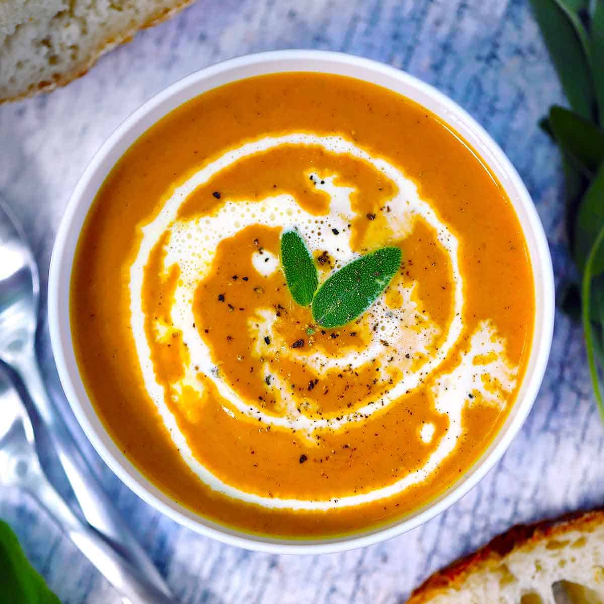

Pumpkin Soup

Easy Pumpkin Soup
This Easy Pumpkin Soup recipe comes together in a mere 15 minutes, thanks to using canned pumpkin puree and only a few other ingredients!
It’s lusciously creamy, flavored by fresh (or dried) sage and warming pumpkin pie spice, and is a perfect savory pumpkin recipe for the fall
Ingredients
- 2 tablespoons butter
- 1 onion diced (yellow, white, or sweet)
- 1 tablespoon chopped fresh sage
- 1 teaspoon pumpkin pie spice
- 4 cups chicken or vegetable broth
- 30 oz. pumpkin puree
- 1/2 cup heavy cream
- kosher salt and black pepper
- more fresh sage, heavy cream, and fresh cracked pepper for garnish
Instructions
- In a large pot, melt the butter (2 tablespoons) over medium heat. Add the diced onion and sauté until softened and starting to brown.
Add the chopped fresh sage (1 tablespoon) and pumpkin pie spice (1 teaspoon) and stir until onions are coated and spices are fragrant.
- Add the chicken or vegetable broth (4 cups) and the pumpkin puree (30 oz.). Bring to a gentle boil.
Turn off the heat and puree the soup, using an immersion blender or standing blender. Stir in the heavy cream (½ cup). Season to taste with kosher salt and black pepper.
- Serve, garnishing with fresh cracked pepper, fresh sage, and a swirl of heavy cream if you like.